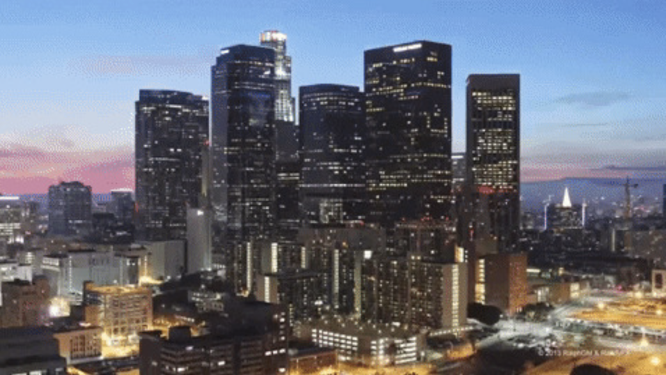
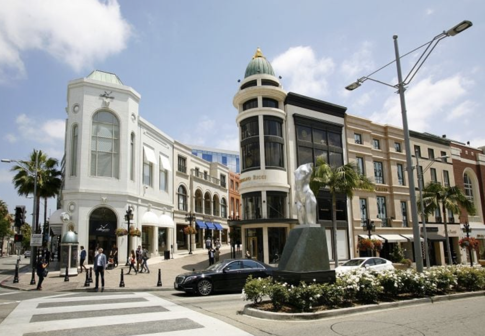
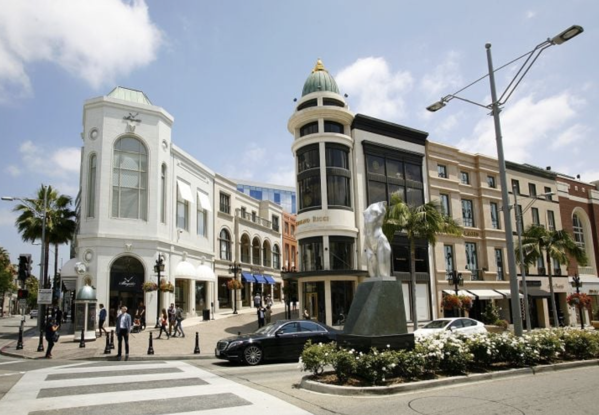
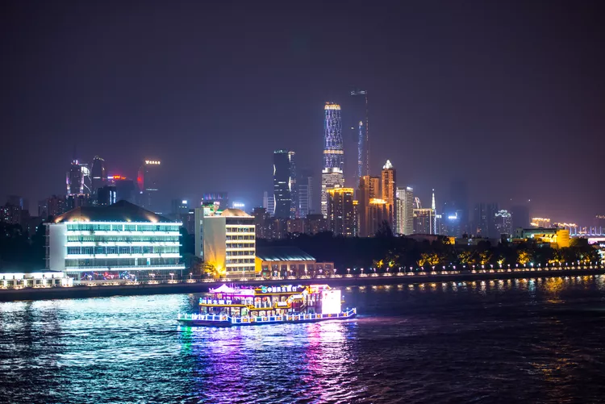
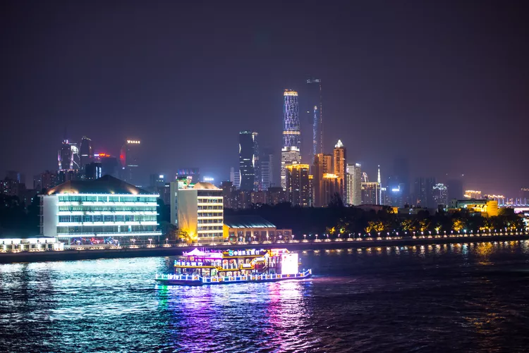

New York City, otherwise known as “The Big Apple,” is a bustling city in the United States of America. Home to about 8 million people, New York City houses popular attractions such as the statue of liberty, central park, the empire state building, and many more.
There are 5 boroughs within New York City, including Brooklyn, Manhattan, Staten Island,Queens, Bronx. Each borough is filled with different sights to see. New York City has many opportunities not only for those who live there, but also those visiting. From navigating the subway system to seeing a Broadway show, it is impossible to get bored.
Los Angeles


Geographical Location: North America
Los Angeles, often referred to as L.A., is a large city located in Southern California, USA. Known for its glamorous allure and cultural diversity, the city is a melting pot of various ethnicities, languages, and lifestyles. The city's skyline is a mosaic of modern skyscrapers, historic architecture, and palm tree-lined streets, offering a captivating blend of urban sophistication and laid-back charm.
As a global center for entertainment, Los Angeles is the heart of the American film and television industry, epitomized by the iconic Hollywood sign perched atop the Hollywood Hills. The city is home to numerous studios, theaters, and production companies that shape the world's cultural landscape through movies, TV shows, music, and more. Alongside its cinematic fame, Los Angeles boasts a vibrant art scene, with an array of museums, galleries, and street murals that celebrate creativity and innovation. Additionally, the city's culinary scene reflects its diverse population, offering a fusion of flavors from around the world and a penchant for health-conscious dining trends. With its mix of celebrity culture, beachside leisure, and artistic spirit, Los Angeles stands as a symbol of the modern American dream.
Photo Gallery
 City Landscape View of LA
City Landscape View of LA
 Hollywood Walk of Fame
Hollywood Walk of Fame
 Sunset View of LA
Sunset View of LA
 City View of LA

Rodeo Drive
City View of LA

Rodeo Drive
Guangzhou, China


Geographical Location: Asia
Guangzhou is the capital and largest city of Guangdong province in southern China. Located on the Pearl River about 120 km (75 mi) north-northwest of Hong Kong and 145 km (90 mi) north of Macau, Guangzhou has a history of over 2,200 years and was a major terminus of the maritime Silk Roa it continues to serve as a major port and transportation hub as well as being one of China's three largest cities.
Guangzhou is celebrated for its many handicraft products, including ivory carvings, jade objects, embroideries, fans, porcelain, and paper umbrellas. These, along with the citys famous cuisine and its many museums and other cultural attractions, have made Guangzhou one of China's principal tourist destinations.
Photo Gallery
 Shangxiajiu pedestrian street in Guangzhou, a bustling street full of places to eat and shop!
Shangxiajiu pedestrian street in Guangzhou, a bustling street full of places to eat and shop!
 Guangzhou Opera house on the shore of the Pearl River: Concerts, dances, and performance art happen year-round here.

Pearl River offers night cruises, where tourists can enjoy the lights of the city at night as well as get a nice view of the Canton Tower.
Guangzhou Opera house on the shore of the Pearl River: Concerts, dances, and performance art happen year-round here.

Pearl River offers night cruises, where tourists can enjoy the lights of the city at night as well as get a nice view of the Canton Tower.
 Liwan Park has lots to offer. With Cantoneese Opera, theater, singing, acrobatics, etc. there is lots of Chinese history depicted. Take pictures and rent a paddleboat!
Liwan Park has lots to offer. With Cantoneese Opera, theater, singing, acrobatics, etc. there is lots of Chinese history depicted. Take pictures and rent a paddleboat!
 Built in the traditional Lingnan architectural style, the temple of Sun Yat-sen commemorates the life of Dr. Sun Yat-sen, a political theorist and leader of modern China.
Built in the traditional Lingnan architectural style, the temple of Sun Yat-sen commemorates the life of Dr. Sun Yat-sen, a political theorist and leader of modern China.